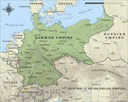
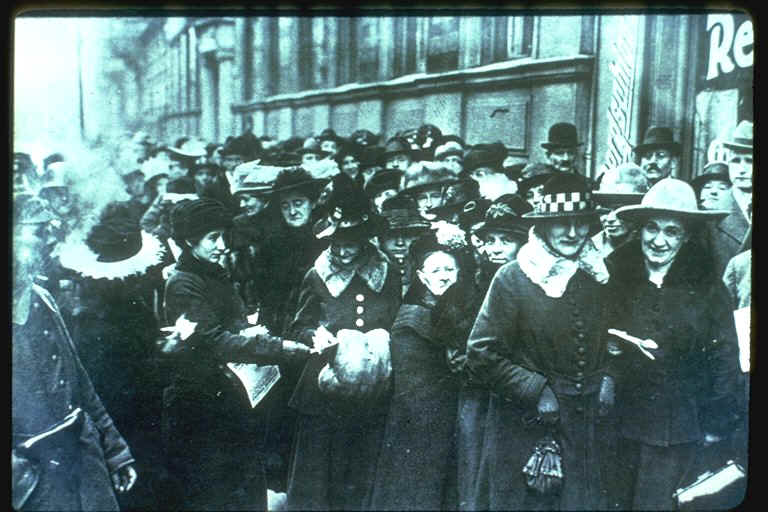
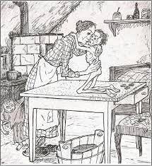
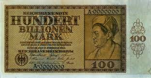

IB Docs (2) Team
IB Docs (2) Team

1. La República de Weimar (1918-1933)
La República de Weimar experimentó una serie de desafíos políticos y económicos en los años posteriores a la Primera Guerra Mundial. Sin embargo, también hubo avances en las esferas económica, cultural y social y en las relaciones exteriores después de 1923. No obstante, el hecho de que fuera seguida por una dictadura despiadada significa que, como escribe Ian Kershaw, "se ha visto eclipsada por su final y por lo que le siguió".
Preguntas orientadoras
¿Cómo era Alemania en la víspera de la Primera Guerra Mundial?
¿Qué problemas enfrentó Alemania en 1918?
¿Cuál fue el significado de la nueva constitución?
¿Cuál fue el significado del Tratado de Versalles?
¿Qué desafíos políticos enfrentó la República de Weimar entre 1918 y 1923?
¿Qué desafíos económicos enfrentó la República de Weimar entre 1918 y 1923?
¿Por qué se conoce el período 1923 - 1929 como la "época de oro" de la República de Weimar?
¿Por qué Hitler y los nazis pudieron ganar apoyo después de 1929?
¿Por qué Hitler fue nombrado Canciller en 1933?
< 1.Cómo era Alemania en vísperas de la Primera Guerra Mundial?

Antes de enfocarse en el impacto de la Primera Guerra Mundial en Alemania, es una buena idea hacer que los estudiantes miren su trasfondo ya que el mismo tuvo un profundo efecto en la naturaleza de la política y la sociedad alemana después de la guerra.
Tarea Uno
ATL: Habilidades de investigación
1. De a dos, investigue las características principales del Imperio Alemán en vísperas de la Primera Guerra Mundial bajo los siguientes encabezados. Pueden tomar notas o crear un mapa mental usando estos encabezados.
- El sistema político: Kaiser, Canciller, el Reichstag - ¿cuáles eran los poderes y la función de cada uno?
- Agrupaciones políticas y sociales: objetivos de los Junkers, los trabajadores, los diferentes partidos políticos
- El papel del ejército
- El estado de la economía
2. ¿Qué adjetivos utilizaría para describir el estado político, económico y social de Alemania en 1914?
2. ¿Qué problemas afrontó Alemania en 1918?
Actividad inicial
Compruebe su comprensión de estos términos esenciales que serán necesarios para la comprensión de esta unidad:
- República
- Soviet
- Izquierda y derecha
- Conservadurismo
- Reaccionario
- Autoritario
- Coalición
- Representación proporcional
- Putsch
- Marxismo
A pesar de que Alemania se unió en 1914 en una ola de patriotismo que unificó a todas las agrupaciones políticas a favor del esfuerzo bélico, la falta de una victoria rápida significó que Alemania se vio envuelta en una guerra de desgaste, luchando una guerra en dos frentes. Para 1916 - 1917, Alemania se enfrentaba a una severa escasez de alimentos, el aumento de los precios - en parte causado por el bloqueo británico que impidió que todos los suministros llegaran. 1917 fue un año crucial con el general alemán Ludendorff lanzando una gran ofensiva en un último intento de ganar la guerra.
Tarea Uno
ATL: Habilidades de pensamiento
Vea el siguiente video, Armisticio, de David Reynolds, desde el minuto 22 hasta el 34. Muestra el último intento de Ludendorff de ganar la guerra.
- ¿Cuáles eran los objetivos de Ludendorff al lanzar una nueva ofensiva?
- ¿Qué factores determinaron el momento de esta ofensiva?
- ¿Cuáles fueron las características principales de este ataque?
- ¿Cómo modificó esto el estilo de lucha que había sido tan característico de la guerra de trincheras hasta este momento?
- ¿Qué éxitos logró?
- ¿Por qué finalmente fracasó?
Tarea Dos
ATL: Habilidades de investigación
Investigue la situación interna de Alemania a principios de 1918. ¿Cuál era la situación de la producción agrícola? ¿Cuál era el estado de ánimo de la población? ¿Cuál fue el impacto del Bloqueo Británico?
Con Alemania enfrentándose a la derrota y a la amenaza de invasión, Lundendorff decidió que era necesario un armisticio. Esperaba que se basara en los 14 puntos del Presidente Wilson, y para intentar asegurar un mejor trato de los Aliados, persuadió al Kaiser de que entregara el poder a un gobierno civil. Esto también serviría para ayudar a aplacar las demandas de reforma política dentro de Alemania.
En octubre de 1918, el Príncipe Max von Baden fue nombrado Canciller y las reformas constitucionales hicieron que el Canciller y su gobierno rindieran cuentas al Reichstag en lugar de al Kaiser y las fuerzas armadas quedaran bajo el control del gobierno civil. También se iniciaron negociaciones con los aliados para un armisticio. Sin embargo, la "revolución desde arriba" no fue lo suficientemente lejos y ahora también existía la amenaza de una "revolución desde abajo"; motines en las bases navales de Kiel y Wilhelmshaven, el establecimiento de soviets o consejos obreros en las ciudades y la declaración de una República en Baviera. En respuesta, el Príncipe Max anunció que el Kaiser renunciaría y entregó la Cancillería a Friedrich Ebert, líder del SPD (Partido Socialdemócrata Aleman).
Tarea Tres
ATL: Habilidades de pensamiento
Vea más del video del Armisticio de 1 hora y 8 minutos a 1 hora y 21 minutos que muestra el fracaso de Ludendorff para controlar los acontecimientos, el paso desde"revolución desde arriba" a una "revolución desde abajo" y el impacto del fin de la guerra en Alemania con el desarrollo de la teoría de la "puñalada por la espalda".
1. ¿Por qué cree que sería un problema que la primera acción del nuevo gobierno alemán fuera firmar un armisticio humillante?
2. ¿Cuál fue la reacción de los soldados alemanes a esto?
3. ¿Por qué había tenido éxito el plan de Ludendorff a pesar de que el Kaiser se había marchado?
4. ¿Cuál fue la respuesta de Hitler a los acontecimientos?
5. ¿Cuál fue la versión de Ludendorff sobre por qué se había firmado el Armisticio?
Tarea Cuatro
ATL: Habilidades de pensamiento
El siguiente discurso fue hecho por Philip Scheidemann para anunciar la nueva República
1. ¿De qué manera este discurso trata de ganar apoyo para la nueva República? (observa el contenido y el tono)
2. Con referencia a su origen, propósito y contenido, evalúe el valor de esta fuente para un historiador que estudia el grado de apoyo que existía para la nueva República en 1918.
"¡Obreros y soldados! Los cuatro años de guerra fueron horribles, horribles los sacrificios que el pueblo tuvo que hacer en propiedad y sangre; la desafortunada guerra ha terminado. La matanza ha terminado.
Las consecuencias de la guerra, la necesidad y el sufrimiento, nos agobiarán durante muchos años. La derrota que tanto nos esforzamos en evitar, bajo cualquier circunstancia, ha llegado a nosotros. Nuestras sugerencias sobre un entendimiento fueron saboteadas, nosotros personalmente fuimos burlados e ignorados. Los enemigos de la clase obrera, los verdaderos enemigos internos responsables del colapso de Alemania se han vuelto silenciosos e invisibles. Eran los guerreros de la patria, que mantenían sus demandas de conquista hasta ayer, tan obstinadamente como luchaban contra cualquier reforma de la constitución y especialmente del deplorable sistema electoral prusiano.
Estos enemigos del pueblo están acabados para siempre. El Káiser ha abdicado. Él y sus amigos han desaparecido; el pueblo le ha ganado a todos ellos, en todos los campos. El príncipe Max von Baden ha entregado el cargo de canciller del Reich al representante Ebert. Nuestro amigo formará un nuevo gobierno formado por trabajadores de todos los partidos socialistas.
Este nuevo gobierno no puede ser interrumpido en su trabajo para preservar la paz y cuidar el trabajo y el pan. Obreros y soldados, sean conscientes de la importancia histórica de este día: han ocurrido cosas exorbitantes. Grandes e incalculables tareas nos esperan. Todo para el pueblo. Todo por el pueblo. Nada puede sucederle al honor del Movimiento Laborista. Estad unidos, fieles y en conciencia. Lo viejo y podrido, la monarquía, se ha derrumbado. Lo nuevo puede vivir. ¡Viva la República Alemana!"
Tarea Cinco
ATL: Habilidades de investigación y pensamiento
1. ¿Qué era el Pacto de Ebert-Groener?
2. ¿Cuál fue el Acuerdo Stinnes-Legien?
3. Trabajen de a dos. ¿Qué asuntos tuvo que tratar Ebert como nuevo Presidente de la nueva República Alemana? Agrupen los puntos bajo los temas económicos, sociales, militares, políticos.
3. ¿Cuál era la trascendencia de la nueva constitución?

El nuevo gobierno elegido en 1919 tuvo que reunirse en Weimar debido a los graves disturbios que se produjeron en Berlín. El SPD había conseguido la mayor parte de los votos y tenía el mayor número de escaños. El sistema de representación proporcional, sin embargo, significaba que el SPD no tenía una mayoría absoluta y que tenía que formar una coalición con el Partido de Centro Católico (BVP) y el Partido Democrático Alemán (DDP). Uno de los primeros retos del nuevo gobierno fue crear una constitución.
Primera tarea
ATL: Habilidades de pensamiento
Investiga los principales aspectos de la constitución de Weimar
1. ¿Qué es lo que ves como:
a. los puntos fuertes de la constitución?
b. las debilidades de la constitución?
c. los aspectos de la constitución que serían atractivos para los trabajadores?
d. los aspectos de la constitución que atraerían a grupos más conservadores como los industriales?
2. ¿Qué evidencia puedes encontrar para apoyar la declaración de Ernst Troeltsch de que "De la noche a la mañana nos convertimos en la democracia más radical de Europa"?
3. ¿Cuáles eran las posibles ventajas y desventajas de tener una representación proporcional como sistema de votación?
4. ¿Cuál fue el significado del Tratado de Versalles?

Caricatura alemana sobre el Tratado de Versalles
Actividad de inicio
¿Cuál es el mensaje de esta caricatura?
Este breve vídeo también proporciona una visión general de los términos clave del tratadao.
Tarea Uno
ATL: Habilidades de pensamiento
1. Lea la siguiente evaluación del impacto del Tratado de Versalles.
Según este relato, ¿por qué el Tratado no fue tan duro como lo describieron los relatos contemporáneos?
¿Cuál fue, según este relato, el impacto real del Tratado?
Muchos historiadores sostienen ahora que el Tratado de Versalles fue más indulgente de lo que se pensaba en ese momento, ya que dejó a Alemania en una posición relativamente fuerte en el centro de una Europa debilitada; no había sido invadida, por lo que la mayor parte de su tierra e industria estaban intactsa y, dados los propios objetivos de guerra de Alemania y las exigencias que había formulado en el Tratado de Brest-Litovsk con Rusia, los Aliados actuaron con moderación en sus exigencias. La crisis económica que siguió tampoco fue causada por las reparaciones y no fue en sí misma responsable del caos de la Alemania de la posguerra. Sin embargo, el Tratado tuvo un impacto dramático en la República de Weimar. Esto se debe a que la propaganda nacionalista logró convencer a la población alemana de que el Tratado de Versalles era responsable de los problemas a los que se enfrentaba Alemania y que era injusto. El hecho de que hubiera sido firmado por los políticos de Weimar significaba que la propaganda de la derecha podía culparlos del Tratado; también perpetuaba la "teoría de la puñalada por la espalda". Así, el Tratado socavó la República y fortaleció la mano de los grupos de derecha.
5. ¿Qué desafíos políticos enfrentó la República de Weimar entre 1918 y 1923?
Primera tarea
ATL: Habilidades de pensamiento
1. De a dos, investiguen más a fondo los desafíos políticos de la República de Weimar 1918 - 1923. Completen la siguiente tabla para mostrar la naturaleza de los desafíos y su impacto (vea abajo un video sobre el Putsch de Munich).
 Cuadro sobre las amenazas políticas a la República de Weimar
Cuadro sobre las amenazas políticas a la República de Weimar
Tarea dos
ATL: Habilidades de pensamiento
Mira el siguiente video del Episodio 1 de la serie "Hitler’s Circle of Evil” (“El circulo del mal de Hitler)
Empieza a mirar desde el minuto 35.
- ¿Qué factores económicos y políticos se unieron para sugerir que 1923 era un buen momento para que el partido nazi diera un golpe de estado?
- ¿Por qué estaba Ludendorff involucrado en este golpe?
- ¿Cuáles eran los objetivos del golpe?
- ¿Por qué parecía que podría tener éxito?
- ¿Qué error cometió Ludendorff?
- ¿Cuáles fueron los resultados del golpe para el Partido Nazi?
- ¿Cuál fue la trascendencia del golpe?
Tarea Tres
ATL: Habilidades de pensamiento
Con la violencia política como telón de fondo, el gobierno también se enfrentó a la dificultad de mantener coaliciones fuertes y viables. En los cuatro años de 1919 a 1923, hubo seis gobiernos, el más largo de los cuales duró seis meses.
1. Considere la siguiente tabla que muestra los partidos políticos en el Reichstag. ¿Qué partidos tenían más probabilidades de apoyar al gobierno de Weimar?
2. ¿Qué indica la tabla sobre los cambios en la opinión pública?
3. ¿Puede explicar el cambio en la opinión pública?
4. ¿Cuál considera que es la mayor amenaza política para la República de Weimar en 1923?
 Partidos politcos en el Reichstag
Partidos politcos en el Reichstag
Nota: Puedes interesarte leer este artículo los partidos políticos para más información
6. ¿Qué desafíos económicos enfrentó la República de Weimar entre 1918 y 1923?

La derrota de Alemania en la guerra la dejó en una situación financiera desesperada: una enorme deuda, una inflación creciente, el costo de las reparaciones y la pérdida de ingresos de los territorios perdidos en el Tratado de Versalles. Sin embargo, en lugar de financiar la deuda mediante un aumento de los impuestos que habría sido impopular, o mediante la reducción de las prestaciones por desempleo o los salarios, el gobierno siguió pidiendo prestado e imprimiendo dinero con la esperanza de que el desempleo se mantuviera bajo y hubiera un crecimiento económico. También se imprimió dinero para pagar las reparaciones. Como habrán visto en el video anterior, todo esto llevó a la inflación. Sin embargo, el detonante que llevó a la hiperinflación fue la ocupación del Ruhr por los franceses y belgas en enero de 1923.
Actividad inicial
Vea los primeros 6 minutos del siguiente video (Twentieth Century: Make Germany Pay World Part 2) que da una visión general de los acontecimientos durante la ocupación del Ruhr y la hiperinfación
Tarea dos
ATL: Habilidades de pensamiento
Lea los relatos de primera mano en el sitio web Facing History del período de hiperinflación
¿Qué puedes aprender de estos relatos de primera mano sobre el impacto de la inflación en la gente común? Enumera las formas en que la gente se vio afectada. ¿Qué personas se beneficiaron de esta situación?
Testimonios personales sobre los años de inflación
Durante los años de la inflación, la gente que había ahorrado su dinero en los bancos o que vivía de pensiones o cheques de invalidez se encontró en bancarrota. Los que tenían trabajo se dieron cuenta de que sus aumentos salariales no podían seguir el ritmo del aumento casi instantáneo de los precios. El artista George Grosz describió lo que era comprar en esos días.
Permanecer en el escaparate era un lujo porque las compras debían hacerse inmediatamente. Incluso un minuto adicional significaba un aumento de precio. Había que comprar rápido porque un conejo, por ejemplo, podía costar dos millones de marcos más por el tiempo que tardaba en entrar en la tienda. Unos pocos millones de marcos no significaban nada, en realidad. Sólo que significaban más gastos de transporte. Los paquetes de dinero necesarios para comprar el artículo más pequeño hace tiempo que se han vuelto demasiado pesados para los bolsillos de los pantalones. Pesaban muchas libras. . . . La gente tenía que empezar a llevar su dinero en carros y mochilas. Yo usaba una mochila.
Bajo el liderazgo de Gustav Stresemann, un político conservador que apoyaba a la república, el gobierno finalmente controló la inflación. Pero llevó tiempo y mucha gente no pudo dejar de sentir que el gobierno había permitido que sucediera. Un alemán expresó sus sentimientos cuando escribió:
Por supuesto que toda la gente que tenía pequeños ahorros fueron eliminados. Pero las grandes fábricas y las casas bancarias y multimillonarias no parecían estar afectadas en absoluto. Continuaron acumulando de sus millones. Esos grandes holdings fueron protegidos de alguna manera de las pérdidas. Pero la masa de la gente estaba completamente arruinada. Y nos preguntamos, "¿Cómo puede suceder eso? ¿Cómo es que el gobierno no puede controlar una inflación que acaba con los ahorros de toda la gente, pero los grandes capitalistas pueden salir indemnes?" Nosotros, los que lo vivimos, nunca obtuvimos una respuesta que significara algo. Pero después de eso, incluso la gente que solía ahorrar ya no confiaba en el dinero, o en el gobierno. Decidimos tener un momento de diversión cada vez que teníamos dinero de sobra, lo cual no era frecuente.
En una carta que Bertha Pappenheim escribió en 1923, cuenta la historia de un viaje que hizo a Alemania. En este extracto, habla del impacto de la inflación en los ciudadanos alemanes:
Viajamos de Isenburg a Frankfurt, donde Emmy desembarcó, y luego continuamos. Hacía frío, el calor no llegaba a nuestro vagón. Cambiamos de tren en Eberstadt. Para entender las condiciones en Alemania, sólo hay que mirar y escuchar lo que sucede en un vagón de cuarta clase; caras cansadas, desgastadas y enfadadas. ¡Y qué harapos, qué charla! Cómo uno es un esclavo para no ganar nada. Todos esos millones no compran nada. El pan cuesta 600 mil millones (hoy, 850 mil millones). Una pálida y enfermiza mujer sentada a mi lado parecía no haber aprendido el precio todavía. Se levantó, repitiendo desesperadamente, "¡600 billones!" Los otros se quejaron de los jóvenes que ganan dinero, pero no ayudan, sólo fuman cigarrillos y usan medias transparentes. Y sobre los campesinos que esconden patatas, las dan de comer al ganado y las venden sólo por dólares.
Tarea tres
ATL: Habilidades de pensamiento y autogestión
1. Repasa los problemas clave de la República de Weimar hasta 1923. Mira los primeros 20 minutos de Los Nazis: una advertencia de la historia, EPISODIO 1: “Asistencia para llegar al poder” aqui.
Preguntas
- ¿Por qué los soldados alemanes se sorprendieron por el armisticio en 1918?
- ¿Qué era la teoría de “la puñalada en la espalda”?
- ¿Cuál era la situación doméstica de Alemania al final de la guerra?
- ¿Qué impacto tenía este sufrimiento?
- ¿Quiénes eran los Freikorps y cuál era su papel en la Alemania de posguerra?
- ¿Por qué eran los judíos “chivos expiatorios convenientes”?
- ¿Qué factores animaron a algunos alemanes a girar a la derecha política a principios de los años 20?
2. Elabora una línea de tiempo de los acontecimientos trascendentales desde 1919 a 1923. Pon los eventos políticos más significativos sobre la línea y los eventos económicos por debajo de la línea.
7. ¿Por qué el período 1923 - 1929 es conocido como la "Era Dorada" de la República de Weimar?
En 1923, Gustav Stresemann fue nombrado Canciller. Tomó medidas para acabar con la inflación:
- Terminó con la resistencia pasiva en el Ruhr y prometió pagar las reparaciones
- Trajo una nueva moneda, el Rentenmark, para reemplazar la moneda sin valor
- Nombró a un experto financiero, Hjalmar Schacht, para el Reichsbank
- Recortó el gasto del gobierno para ahorrar dinero
- Negoció con los Aliados para reprogramar las reparaciones: el Plan Dawes redujo el monto de las reparaciones que Alemania tendría que pagar cada mes y obtuvo un préstamo de los Estados Unidos.
Tras el Putsch de Munich, Stresemann fue criticado por no haber tratado más duramente a los nazis; los socialistas se retiraron de su gobierno y fue obligado a dimitir como canciller. En el nuevo gobierno liderado por Wilhelm Marx en 1924, Stresemann fue nombrado ministro de asuntos exteriores. Era un nacionalista pragmático que quería restaurar la posición de Alemania en Europa y liberarla de las restricciones impuestas por el Tratado de Versalles. Sin embargo, se dio cuenta de que la mejor manera de lograr estos objetivos era cumplir con los términos del Tratado de Versalles, con el fin de mejorar las relaciones con Gran Bretaña y Francia. Esto le permitiría entonces presionarles para que revisaran el tratado.
Como resultado de esta política, Stresemann logró varios éxitos:
El Pacto de Locarno, 1925: Stresemann garantizó las fronteras occidentales de Alemania, lo que tranquilizó a Francia y aportó un cierto grado de acercamiento entre ambos países. Como resultado, pudo asegurar la retirada de las fuerzas aliadas de Alemania
Sociedad de Naciones, 1926: Alemania fue aceptada en la Sociedad de las Naciones y se le dio el estatus de gran potencia en el Consejo de la Sociedad con poder de veto
El Tratado de Berlín, 1926: este renovó el anterior Tratado de Rapallo que había sido firmado en 1922 con Rusia continuando así las buenas relaciones con la URSS
El Plan Young, 1929: los Estados Unidos aceptaron dar más tierras a Alemania y se estableció un plan de reparaciones muy reducido para repartir el costo en los próximos 50 años
La política de Stresemann también aseguró el objetivo de retirar las fuerzas extranjeras del suelo alemán. Tras el Pacto de Locarno, en diciembre de 1925, los Aliados se habían retirado de la Zona 1 que estaba situada alrededor de Colonia. Una vez resuelta la cuestión de la reparación en el Plan Young, las restantes fuerzas aliadas se retiraron.
A pesar de estos logros, Stresemann fue atacado por políticos nacionalistas que afirmaban que sus acciones equivalían a una aceptación del Tratado de Versalles.
Tarea Uno
ATL: Habilidades de investigación y pensamiento
En grupos, investiguen hasta qué punto el período 1923-1929 fue "una edad de oro" en la Alemania de Weimar. Cada grupo debe tomar un tema diferente: economía, política, asuntos exteriores y cultura - y luego presentar sus hallazgos al resto de la clase junto con una página de notas resumiendo sus hallazgos.
Asegúrense de incluir lo siguiente:
Economía: progresos realizados pero también debilidades subyacentes
Política: grado de estabilidad; ¿a qué partidos se votó? ¿Cuánta violencia política? Nivel de cooperación entre los partidos, importancia de la elección de Hindenburg como Presidente
Asuntos Exteriores: Los logros de Stresemann para que Alemania sea aceptada en la comunidad internacional; el éxito de su política de Erfüllungspolitik (cumplimiento). Críticas de la derecha a su política.
Experimentación cultural: ¿qué aspectos de la cultura alemana en este momento contribuyeron a su descripción como una época "dorada"?
Tarea Dos
ATL: Habilidades de pensamiento y comunicación
Organicen un debate
Las instrucciones para el debate son las siguientes:
Debe haber tres oradores por cada lado.
El primer orador debe exponer los principales argumentos que su equipo expondrá y dar algunas pruebas de al menos dos de estos argumentos.
El segundo orador debe responder a los puntos planteados por el primer orador de la otra parte y luego pasar a desarrollar al menos dos puntos más.
Después de que los dos primeros oradores de cada lado hayan hablado, el debate debe abrirse a las preguntas del público y cualquiera que no haya dado un discurso debe hacer una pregunta.
Finalmente, el último orador de cada lado debe hablar. Deberán abordar las preguntas que se hayan planteado por el público y refutar los argumentos de la otra parte. Deberán resumir los puntos clave de su equipo de nuevo.
Tengan en cuenta que su profesor decidirá qué lado gana y se darán puntos por argumentos válidos respaldados con pruebas precisas. También se dará crédito por utilizar las opiniones de los historiadores para apoyar sus argumentos, así como responder a los argumentos del equipo contrario y a las preguntas de la sala.
8. ¿Por qué Hitler y los nazis pudieron obtener apoyo después de 1929?
La caída de Wall Street en EE.UU. tuvo un impacto dramático en Alemania y en el destino del Partido Nazi.
Actividad inicial
Mira este corto clip de un video de la BBC llamado History File on the rise of the Nazis. ¿Cuál fue el impacto de la Depresión en la economía y la política alemana? (El episodio completo se puede encontrar aquí
Tarea dos.
ATL: Habilidades de pensamiento
Lea el programa de 25 puntos que fue diseñado por el Partido Nazi en 1923.
Puede leerlo aquí
¿Cuál de estos puntos habría atraído a los alemanes después de 1929?
Tarea tres
ATL: Habilidades de pensamiento
Los principios fundamentals de la ideologia nazi
Vea el siguiente video comenzando en el minuto 3:14 hasta el minuto 10:05
Preguntas:
1. ¿Cuáles eran los principios fundamentales de la ideología nazi según el Dr. David Silberklang?
2. ¿De dónde obtuvieron los nazis sus ideas?
3. ¿Qué política se derivó de la idea de que la raza aria tenía el derecho natural de gobernar?
4. ¿Qué otro ejemplo da Silberklang de una política implementada a partir de la ideología nazi?
5. En términos generales, ¿qué se propuso lograr la ideología nazi?
6. ¿Cuál fue la premisa central de la ideología nazi y a qué condujo en última instancia?
7. ¿Cuáles eran los dos niveles del pensamiento totalitario nazi?
8. ¿Cuál era el Fuhrerprincip?
9. Según el profesor Dan Michman, ¿por qué la naturaleza y la biología eran importantes para la ideología nazi y su cosmovisión?
10. ¿Cómo deberían organizarse las sociedades según las ideas nazis sobre la naturaleza y la biologí
Tarea Cuatro
ATL: Habilidades de investigación y pensamiento
Investiga e identifica las formas en que cada uno de los siguientes factores contribuyó al creciente éxito de Hitler en las elecciones. Tratar de encontrar citas de los historiadores sobre el impacto de cada uno de estos factores:
- Promesas económicas
- Ideología
- La SA
- Miedo al comunismo
- Propaganda
- El carisma de Hitler
9. ¿Por qué Hitler fue nombrado canciller en 1933?
Actividad inicial
El papel de los políticos y empresarios conservadores es clave para el ascenso al poder de Hitler.
Los siguientes extractos de la película Hitler: Circle of Evil da una interesante visión general acerca de las maniobras detrás de bastidores
Tarea Uno
ATL: Habilidades de investigación y pensamiento
1. Investiga el papel de cada uno de los siguientes en el nombramiento de Hitler como Canciller en enero de 1933:
- Von Papen
- Von Schleicher
- Hindenburg
2. ¿Hasta qué punto está de acuerdo con el veredicto de Ian Kershaw:
"Si ellos (la élite) se hubieran opuesto, la cancillería de Hitler hubiera sido inconcebible".
Tarea 2
ATL: Habilidades de pensamiento
De a dos, discutan el papel de cada uno de los siguientes en el fracaso de la República de Weimar. Clasifiquen los factores en orden de importancia que crean que cada uno tiene:
- La Constitución de Weimar
- La posición de las áreas clave de la administración pública
- Los partidos políticos de la República
- La teoría de la "puñalada por la espalda”
- El Tratado de Versalles
- La caída de Wall Street
- Las cualidades de Hitler como líder
- La ideología nazi
- El presidente Hindenburg
También puede leer este artículo sobre la República de Weimar de Facing History, que discute los éxitos y fracasos de la República de Weimar
aga clic en el ojo para una traducci
1929: Un punto de inflexión para la República de Weimar
Es el año 1929 y la miseria de Weimar de principios de los años 20 se ha visto aliviada por cinco años de crecimiento económico y aumento de los ingresos. Alemania ha sido admitida en la Sociedad de Naciones y es una vez más un miembro aceptado de la comunidad internacional. Ciertamente, la amargura por la derrota de Alemania en la Primera Guerra Mundial y la humillación del Tratado de Versalles no han sido olvidadas, pero la mayoría de los alemanes parecen haber llegado a un acuerdo con la nueva República y sus líderes.
Gustav Stresemann acaba de morir. Alemania, en parte, como resultado de sus esfuerzos se ha convertido en un miembro respetado de la comunidad internacional de nuevo. Stresemann habló a menudo ante la Sociedad de Naciones. Con sus homólogos franceses y americanos Auguste Briand y Frank Kellog, había ayudado a negociar el Pacto de Paz de París que llevaba el nombre de sus compañeros diplomáticos Kellog-Briand. Una vez más, Gustav Stresemann había decidido asumir la ardua tarea de dirigir una batalla por una política que consideraba de interés vital para su nación, a pesar de que estaba cansado y enfermo y sabía que la oposición sería obstinada y vitriólica. Stresemann fue la mayor fuerza en la negociación y la guía del Plan Young a través de un plebiscito. Este plan, aunque con la oposición de la derecha, obtuvo la aprobación de la mayoría y redujo aún más los pagos de las reparaciones de Alemania.
¿Cómo se había convertido la Alemania de Weimar en 1929 en una sociedad pacífica, relativamente próspera y creativa, dados sus caóticos y agitados comienzos? ¿Qué factores significativos contribuyeron a la supervivencia y el éxito de la República? ¿Cuáles eran los puntos vulnerables de la República, que permitirían a sus enemigos socavarla en el período comprendido entre 1929 y 1933?
Política
La República de Weimar fue un experimento audaz. Fue la primera democracia de Alemania, un estado en el que los representantes elegidos tenían poder real. La nueva constitución de Weimar intentaba combinar el sistema parlamentario europeo con el sistema presidencial americano. En el período anterior a la Primera Guerra Mundial, sólo los hombres de 25 años o más tenían derecho a votar, y sus representantes electos tenían muy poco poder. La constitución de Weimar daba a todos los hombres y mujeres de a partir de los 20 años de edad el derecho al voto. Las mujeres constituían más del 52% del electorado potencial, y su apoyo era vital para la nueva República. De una votación, que a menudo tenía treinta o más partidos, los alemanes elegían a los legisladores que harían las políticas que moldearían sus vidas. En las elecciones de Weimar compitieron partidos de un amplio espectro político, desde comunistas de la extrema izquierda hasta nacionalsocialistas (nazis) de la extrema derecha. El canciller y el gabinete debían ser aprobados por el Reichstag (legislatura) y necesitaban el apoyo continuo del Reichstag para mantenerse en el poder.
Aunque los creadores de la constitución esperaban que el Canciller fuera el jefe de gobierno, incluyeron disposiciones de emergencia que en última instancia socavarían la República. Gustav Stresemann fue brevemente Canciller en 1923 y, durante seis años ,Ministro de Asuntos Exteriores y asesor cercano de los Cancilleres. La constitución otorgó poderes de emergencia al Presidente elegido por voto directo y lo nombró Comandante en Jefe de las fuerzas armadas. En tiempos de crisis, estos poderes presidenciales serían decisivos. Durante los períodos estables, los cancilleres de Weimar formaron mayorías legislativas basadas en coaliciones principalmente de los socialdemócratas, el Partido Demócrata y el Partido del Centro Católico, todos los partidos moderados que apoyaban a la República. Sin embargo, a medida que la situación económica se deterioraba en 1930, muchos votantes desilusionados se volcaron a los partidos extremistas, los partidarios de la República ya no podían obtener una mayoría. La democracia alemana ya no podía funcionar como sus creadores esperaban. Irónicamente, en 1932, Adolf Hitler, un enemigo acérrimo de la República de Weimar, era el único dirigente político capaz de dirigir una mayoría legislativa. El 30 de enero de 1933, un anciano presidente von Hindenburg nombró a regañadientes a Hitler Canciller de la República. Utilizando su mayoría legislativa y el apoyo de los poderes presidenciales de emergencia de Hindenburg, Hitler procedió a destruir la República de Weimar.
Economía
Alemania salió de la Primera Guerra Mundial con enormes deudas contraídas para financiar una costosa guerra durante casi cinco años. La tesorería estaba vacía, la moneda perdía valor, y Alemania necesitaba pagar sus deudas de guerra y las enormes reparaciones que le impuso el Tratado de Versalles, que puso fin oficialmente a la guerra. El tratado también privó a Alemania de territorio, recursos naturales, e incluso de barcos, trenes y equipo de fábrica. Su población estaba desnutrida y contenía muchas viudas empobrecidas, huérfanos y veteranos discapacitados. El nuevo gobierno alemán se esforzó por hacer frente a estas crisis, que habían producido una grave hiperinflación. En 1924, después de años de gestión de la crisis y de intentos de reforma fiscal y financiera, la economía se estabilizó con la ayuda de préstamos extranjeros, especialmente americanos. Entre 1924 y 1929 prevaleció un período de relativa prosperidad. Esta relativa "edad de oro" se reflejó en el fuerte apoyo a los partidos políticos moderados favorables a Weimar en las elecciones de 1928. Sin embargo, el desastre económico se produjo con el inicio de la depresión mundial en 1929. La caída del mercado de valores americano y las quiebras bancarias llevaron al repliegue de los préstamos americanos a Alemania. Esta situación agravó las dificultades económicas de Alemania. Siguieron el desempleo masivo y el sufrimiento. Muchos alemanes se desilusionaron cada vez más con la República de Weimar y empezaron a virar a partidos radicales antidemocráticos cuyos representantes prometieron aliviar sus dificultades económicas.
Clase y género
La rígida separación de clases y la considerable fricción entre ellas caracterizaba a la sociedad alemana de antes de la Primera Guerra Mundial. Los terratenientes aristocráticos despreciaban a los alemanes de clase media y trabajadora y sólo se asociaban a regañadientes con ricos hombres de negocios e industriales. Los miembros de la clase media cuidaban su estatus y se consideraban superiores a los trabajadores de las fábricas. La cooperación entre los ciudadanos de la clase media y la clase trabajadora, que había roto el monopolio de poder de la aristocracia en Inglaterra, no se había desarrollado en Alemania. En la Alemania de Weimar, las distinciones de clase, aunque algo modificadas, seguían siendo importantes. En particular, la clase media luchaba por preservar su estatus social más elevado y sus ventajas monetarias sobre la clase trabajadora. Ruth Fischer quería que su partido comunista alemán defendiera la causa de los desempleados y los no representados.
Las cuestiones de género también eran controvertidas ya que algunos grupos de mujeres y los partidos políticos de izquierda intentaban crear más igualdad entre los sexos. Ruth Fischer luchó por mantener al partido comunista centrado en estos temas. Cuando los estalinistas la obligaron a dejar el partido, los comunistas perdieron este enfoque. Otros grupos de mujeres, partidos políticos conservadores y de derecha radical, y muchos miembros del clero se resistieron a los cambios que Fischer y sus partidarios defendían. La constitución ordenaba una considerable igualdad de género, pero la tradición y los códigos civil y penal seguían siendo fuertemente patriarcales y contribuían a perpetuar la desigualdad. Las leyes de matrimonio y divorcio y las cuestiones de moralidad y sexualidad eran todas áreas de tensión y debates.
Cultura
Weimar fue un centro de innovación artística de gran creatividad y considerable experimentación. En el cine, las artes visuales, la arquitectura, las artesanías, el teatro y la música, los alemanes estaban en la vanguardia de los desarrollos más apasionantes. La libertad sin precedentes y la amplitud para las variedades de expresión cultural llevaron a una auge de la producción artística. En la escuela de artes y oficios de la Bauhaus, en los estudios de la compañía cinematográfica UFA, en el teatro de Max Rinehardt y en los estudios de los artistas de la Nueva Objetividad (Neue Sachlickeit), se producían obras de vanguardia. Aunque muchos aplaudieron estos esfuerzos, los críticos conservadores y radicales de derecha denunciaron los nuevos productos culturales como decadentes e inmorales. Condenaron a Weimar como una nueva Sodoma y Gomorra y atacaron las influencias americanas, como la música jazz, como contribuyentes a la decadencia.
Religión
La República de Weimar tenía una población que era alrededor del 65% protestante, 34% católica y 1% judía. Después de la unificación alemana en 1871, el gobierno había favorecido fuertemente a las dos principales iglesias protestantes, luterana y reformada, que se consideraban a sí mismas como iglesias patrocinadas por el estado. Al mismo tiempo, el gobierno había acosado y restringido a la Iglesia Católica. Aunque los católicos alemanes sólo habían visto levantarse lentamente las restricciones en el período anterior a la Primera Guerra Mundial, demostraron su patriotismo en la Primera Guerra Mundial. Los judíos alemanes, que se habían enfrentado a siglos de persecución y restricción, finalmente lograron la igualdad legal en 1871. Los judíos también lucharon en números récord durante la Primera Guerra Mundial y muchos se distinguieron en el combate. Los antisemitas se negaron a creer en las cifras y registros del ejército y acusaron a los judíos de socavar el esfuerzo bélico. La nueva igualdad legal del período de Weimar no se tradujo en igualdad social, y los judíos siguieron siendo el "otro" en Alemania.
Tanto católicos como judíos se beneficiaron de la fundación de la República de Weimar. Los católicos entraron en el gobierno en posiciones de liderazgo, y los judíos participaron activamente en la vida cultural de Weimar. Muchos clérigos protestantes resentían la pérdida de su estatus privilegiado. Mientras que muchos aceptaron lentamente la nueva República, otros nunca se reconciliaron con ella. Tanto el clero protestante como el católico sospechaban de los socialistas que formaban parte del grupo gobernante en Weimar y que a menudo expresaban la hostilidad marxista hacia la religión. Los conflictos entre religión y educación y las políticas de religión y género fueron a menudo intensos durante los años de Weimar. El crecimiento del Partido Comunista en Alemania alarmó al clero protestante y católico, y el fuerte apoyo que el Partido Político de Centro Católico había dado a la República se debilitó en los últimos años de la República. Mientras que los judíos tuvieron oportunidades sin precedentes durante el período de Weimar, sus logros y mayor visibilidad añadieron resentimiento a los prejuicios y odios de larga data y alimentaron un creciente antisemitismo.
 Twitter
Twitter
 Facebook
Facebook
 LinkedIn
LinkedIn